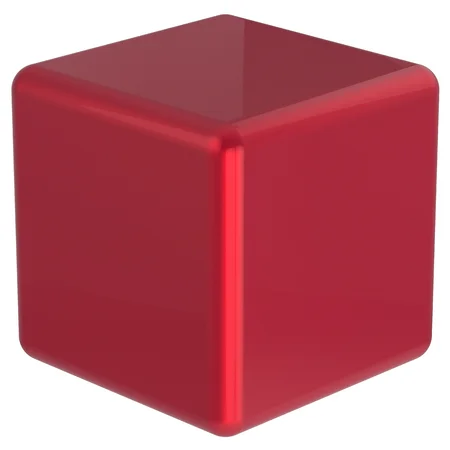

Программа предназначена для визуализации .obj файлов, а именно вершин и рёбер.
Для того что бы отобразить obj файл, необходимо указать программе путь до него, для этого на графическом интерфейсе нужно нажать кнопку "Open file", после чего в появившемся окне выбрать указать директорию и сам obj файл. Если все указано верно, то программа отобразит модель.
Далее можно настроить отображение модели, для этого есть группы кнопок "translate", "rotate", scale, type of protection, setting of the edges/verticles, set background color .
Управление положением модели на экране осуществляется нажатием групп кнопок translate и rotate для перемещения и вращения модели соответственно, измененеие отображения настроивается по осям X, Y, Z.
Группа set background color позволяет поменять цвет фона объекта, для этого необходимо нажать кнопку "choose", в появившемся окне на круге выбрать нужный цвет, после нажатия "ok" он применится к основному окну отображения.
Группа "settings of the edges" позволяет менять цвет линий отображаемого объекта, логика идентична set background color.
Когда настроено отображение модели, можно сделать скриншот готовой "отрендеренной" модели для этого необходимо нажать кнопку "PHOTO", после которой появится диалоговое окно с выбором типа фото JPG/BMP и предложится выбрать место для сохранения изображения. Также можно сделать GIF 5-ти секундное изображение, для этого нужна утилита convert из библиотеки imagemagick и нажать кнопку "GIF" и также выбрать место для сохранения и в течение 5 секунд будет сделано 50 скриншотов модели и объединены в gif-изображение.
